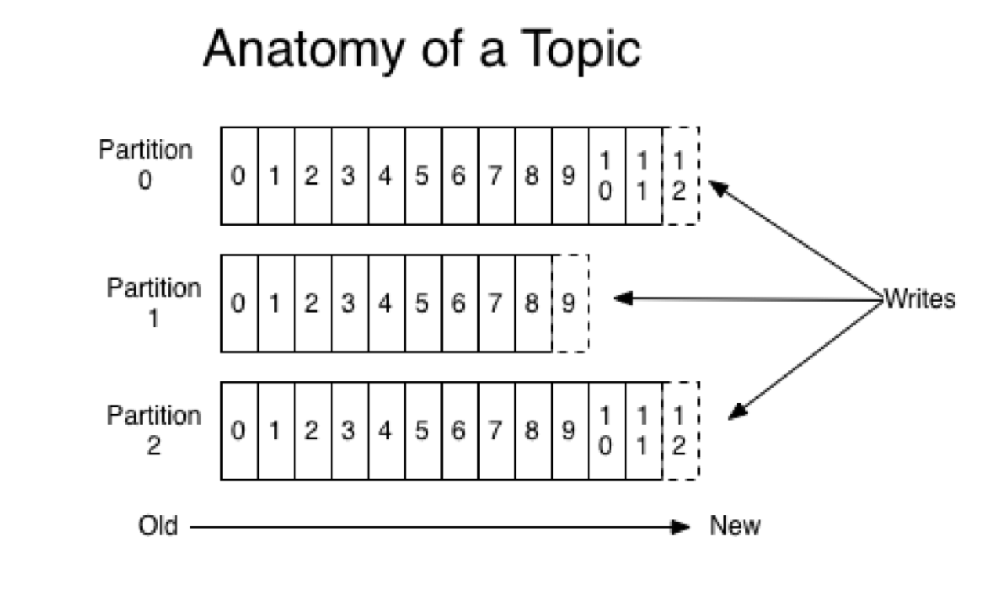
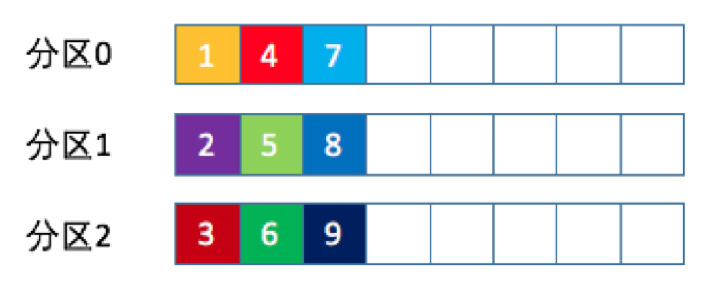
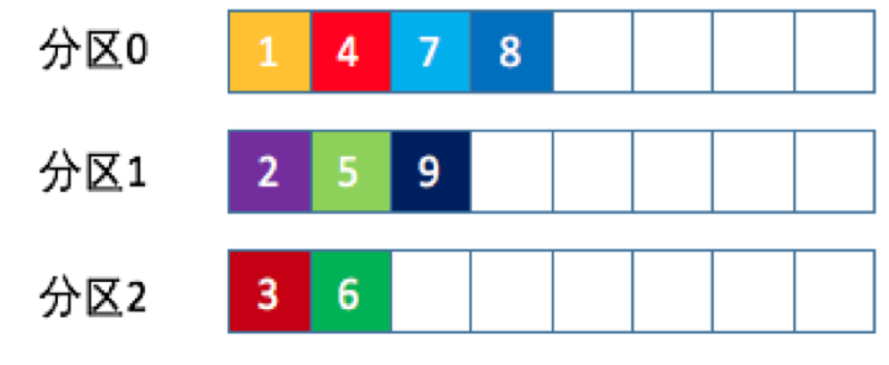
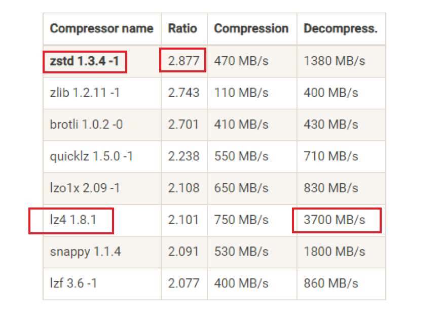

分区
Kafka 的消息组织方 式实际上是三级结构：主题 - 分区 - 消息
问题一：为什么 Kafka 要做这样的设计？为什么使用分区的概念而不是直接使用多个主题呢？
- 分区的目的是：提供负载均衡，实现系统的高伸缩性【Scalability】
- 每条消息 只会 保存在某一个分区中。
- 不同的分区可以放在不同机器上；
- 数据的读写都是基于 分区 这个粒度；
生产者 分区策略
分区策略是决 定生产者将消息发送到哪个分区的算法
轮询策略
Round-robin 策略，即顺序分配,kafka默认分区策略。
随机策略
Randomness 策略， 随机的将消息放置到任意一个分区上。
按消息键保序策略
根据业务指定合适的key进行分区。
生产者 压缩
Producer 发送压缩消 息到 Broker 后，Broker 照单全收并原样保存起来。当 Consumer 程序请求这部分消息 时，Broker 依然原样发送出去，当消息到达 Consumer 端后，由 Consumer 自行解压缩 还原成之前的消息。
Producer 端压缩、Broker 端保持、Consumer 端解压缩。
问题一：Producer、Broker压缩算法不一致
- Producer压缩一遍
- Broker解压，再压缩一遍。
但如果配置一致，则broker保持就好了。
问题二：版本不同，Broker端发生消息格式转化
消息格式转换主要是为了兼容老版本的消费者程序
- Broker解压，再压缩一遍, 从而支持老版本
- 丧失Zero Copy的特性，
当数据在磁盘和网 络进行传输时避免昂贵的内核态数据拷贝，从而实现快速的数据传输
压缩算法
压缩算法的指标
- 压缩比，原先占 100 份空 间的东西经压缩之后变成了占 20 份空间，那么压缩比就是 5，显然压缩比越高越好
- 压缩 / 解压缩吞吐量，比如每秒能压缩或解压缩多少 MB 的数据。同样地，吞 吐量也是越高越好。
在 Kafka 2.1.0 版本之前，Kafka 支持 3 种压缩算法：GZIP、Snappy 和 LZ4。从 2.1.0 开 始，Kafka 正式支持 Zstandard 算法（简写为 zstd）。它是 Facebook 开源的一个压缩算 法，能够提供超高的压缩比（compression ratio）。
最佳实践
CPU允许的情况下，开启压缩zstd，进而也可以节省带宽。
避免消息丢失
如何配置 Kafka 无消息丢失?
对一个问题的回答，先要确认问题是什么，概念的边界
Kafka 的世界里什么 才算是消息丢失，或者说 Kafka 在什么情况下能保证消息不丢失。这点非常关键，因为很多时候我们容易混淆责任的边界，如果搞不清楚事情由谁负责，自然也就不知道由谁来出解决方案了。
Kafka 只对“已提交”的消息（committed message）做有限度的持久化 保证。
- 已提交：只有broker确认收到才算是已提交；
- 有限度：凡事有例外，如果broker全部出现问题等。
生产者
问题： 生产者发送了消息，但是Kafka没有收到
回答问题可以： 概念+原因，概念是为了做铺垫，让原因更直白
- Kafka Producer 是异步发送消息的，也就是说如果你调用的是 producer.send(msg) 这个 API，那么它通常会立即返回，但此时你不能认为消息发送已成功完成。。 “fire and forget”，翻译一下就是“发射后不管“；
- 造成丢失的原因不限于：网络抖动、格式不符合broker<消息过大>等；
- 采用 回调+重试的方式，producer.send(msg, callback)
消费者
问题：消费者程序丢失数据
- 问题定位：消费者要消费的数据不见了。
- 涉及的概念：Consumer 程序有 个“位移”的概念，表示的是这个 Consumer 当前消费到的 Topic 分区的位置。
位移可以类比读书的书签，正常来说，你这次读到100页，下次继续读完全没有问题，问题是：你本计划读到100页，就把书签放到100的位置，实际上读到90页就跑出去完了，下次直接从100页开始，其中就少读了10页。
解决的方法类似与生产者，维持先消费消息（阅读），再更新位移（书签）的顺序
最佳实践
Producer参数
- 使用 producer.send(msg, callback)。
- 设置 acks = all。表明所有副本 Broker 都要接收到消息，该消息才算是“已提交”。 这是最高等级的“已提交”定义。可能对某些业务有点浪费
- retries 为一个较大的值。重试次数；
Broker 端的参数
- unclean.leader.election.enable = false： 控制的是哪 些 Broker 有资格竞选分区的 Leader。如果一个 Broker 落后原先的 Leader 太多，那么 它一旦成为新的 Leader，必然会造成消息的丢失。故一般都要将该参数设置成 false， 即不允许这种情况的发生。
- replication.factor >= 3： 最好将 消息多保存几份，毕竟目前防止消息丢失的主要机制就是冗余。
- min.insync.replicas > 1： 控制的是消息至少要被写入到多少个副本才算是“已提交”。设置成大于 1 可以提升消息持久性。在实际环境中千万不要使用默认值 1。
确保 replication.factor > min.insync.replicas;
推荐设置成 replication.factor = min.insync.replicas + 1。
如果两者相等，那么只要有一个副本挂 机，整个分区就无法正常工作了。我们不仅要改善消息的持久性，防止数据丢失，还要 在不降低可用性的基础上完成
幂等与事务
消息交付可靠性保障： 是指 Kafka 对 Producer 和 Consumer 要处理的消息提供什么样的承诺
- 最多一次（at most once）：消息可能会丢失，但绝不会 被重复发送。
- 至少一次（at least once）【默认】：消息不会丢失，但有可能被 重复发送。
- 精确一次（exactly once）：消息不会丢失，也不会被重 复发送。
Kafka 是怎么做到精确一次的呢？简单来说，这是通过两种机制：幂等性（Idempotence）和事务 （Transaction）
幂等性 Producer
幂等性有很多好处，其最大的优势在于我们可以安全地重试 任何幂等性操作，反正它们也不会破坏我们的系统状态。
在 Kafka 中，Producer 默认不是幂等性的,仅需要设置一个 参数即可，即 props.put(“enable.idempotence”, ture)，或 props.put(ProducerConfig.ENABLE_IDEMPOTENCE_CO NFIG， true)。
作用范围
- 只能保证单分区上的幂等性，即一个幂等性 Producer 能够保证某个主题的一个分区上不出现重复消 息，它无法实现多个分区的幂等性。
- 它只能实现单会 话上的幂等性，不能实现跨会话的幂等性。这里的会话，你 可以理解为 Producer 进程的一次运行。当你重启了 Producer 进程之后，这种幂等性保证就丧失了
事务
实现多分区以及多会话上的消息无重复，应该怎么做呢？答案就是事务（transaction）或 者依赖事务型 Producer。
事务提供的安全性保障是经典的 ACID，即原 子性（Atomicity）、一致性 (Consistency)、隔离性 (Isolation) 和持久性 (Durability)。
事务型 Producer 能够保证将消息原子性地写入到多个分区 中。这批消息要么全部写入成功，要么全部失败。和幂等性 Producer 一样，开启 enable.idempotence = true。
Consumer 端，读取事务型 Producer 发送的消息也是需要一些变更的。修改起来也很简单，设置 isolation.level 参数的值即可。当前这个参数有两个取值：
- read_uncommitted：这是默认值，表明 Consumer 能 够读取到 Kafka 写入的任何消息,
- read_committed：表明 Consumer 只会读取事务型 Producer 成功提交事务写入的消息。当然了，它也能看 到非事务型 Producer 写入的所有消息。
小结
天下没有免费的午餐。比起幂等性 Producer， 事务型 Producer 的性能要更差，在实际使用过程中，我们 需要仔细评估引入事务的开销，